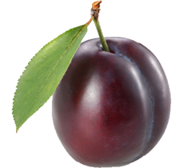

Result.
You are a modest and conservative person; who can be quite sensitive at times. You tend to be thoughtful and contemplative, and therefore are rarely rash in doing things. You are quite ambitious; and are good at anything that requires much detailing or working with numbers. You are quick at finding fault with others. While looking for a partner, you value a person’s intellect far above their looks or good old passion. You are quite shy and not very comfortable demonstrating affection.